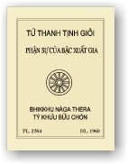

|
BuddhaSasana Home Page |
Vietnamese, with Unicode Times font |
|  |
Tứ
Thanh Tịnh Giới và
|
-ooOoo- Q uyển Luật này bần Tăng trích lục theo trong Tam Tạng Pàli, quyển Pàtimokka Sankheppa, quyển Anàgàra Vinaya và quyển Pubba Sikkhà Vannanà. Những điểm quan trọng mà bậc xuất gia cần phải biết (ngoài ra cũng còn rất nhiều phận sự phải học hỏi thêm cho hiểu rộng ra nửa). Ðây chỉ giải tóm tắt những chỗ cần yếu đến mỗi khi hành Tăng sự.Với tài học còn kém khuyết nhưng cố gắng biên soạn ra, sợ e có chỗ nào sai lầm, khuyết điểm xin chư đại đức hoan hỉ chỉ thêm cho, hầu có sửu chữa lại cho được chu đáo. Quyển Luật này xuất bản với thiện ý để góp sức thêm một tài liệu trong việc hoằng dương Phật pháp, mà hàng xuất gia luôn luôn phải cần dùng đến, nhưng mỗi khi cần dùng khỏi phải phiền phức lục kiếm câu Pàli chỗ nọ, chỗ kia và muốn hiểu rỏ phận sự của mình ít nhất cũng phải thuộc quyển Luật này thì mới thực hành dễ dàng. Ðức Phật có nói: Người chăn bò mà không biết bầy bò của mình có bao nhiêu con cái, con đực, màu vàng, đen, đốm v.v... thì cũng không thể gìn giữ bầy bò cho được tròn đủ như thế nào? Thì thầy Tỳ Khưu trong Phật giáo, nếu không biết giới hạnh và phận sự của mình là bao nhiêu, thì cũng không thể gìn giữ phạm hạnh cho được chu đáo vậy. Hơn nữa, Ðức Phật có nói: Giới Luật mà còn tồn tại đến lúc nào, thì giáo pháp của Như Lai cũng còn thạnh hành đến lúc ấy. Nếu khi nào Giới Luật mà mất đi thì giáo pháp của Như Lai cũng tiêu diệt, do câu Vinayo sàsana mùlam - "Giới Luật là nền tảng của Phật Giáo" vậy. Quả phước của sự phiên dịch này, Bần Tăng xin hồi hướng đến các bậc ân nhân nhất là Thầy Tổ và song thân đều được thọ hưởng và xin cho được mau pháp Bồ đề Tâm để tu hành cho đến nơi an vui bất sanh bất diệt. Tấm
lòng thành thật -ooOoo- |
Chân thành cám ơn anh NCT đã giúp đánh máy vi tính (Bình Anson, tháng 7, 2001)
[Trở
về trang Thư Mục]
updated: 05-09-2001